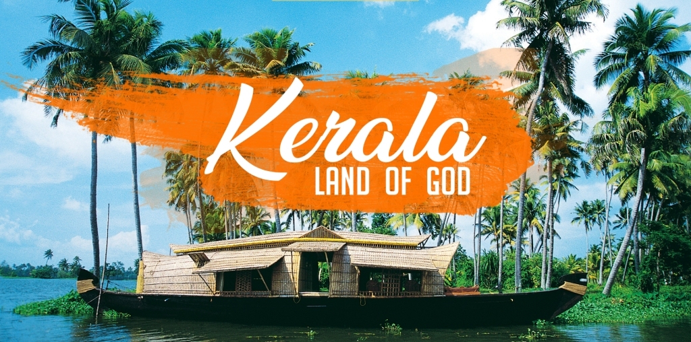
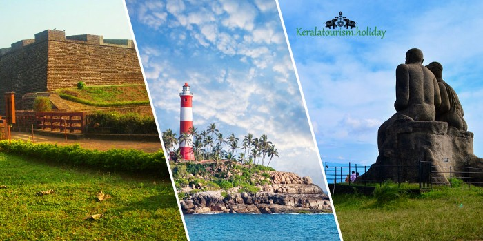

Kerala is a land of arts and festivals. It has everything to entertain the people all over the world.
A long list of rivers in this state surely makes for a perfect vacation whether you want to try boating or simply relax.
Kerala's landscape is adorned top to bottom by a plethora of beaches that cater to locals and visitors alike.

Kerala is popular for having numerous majestic waterfalls. These scintillating cascades are famous picnic spots round the year.